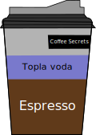
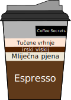

Espresso
Espresso je jaka kava koja se priprema propuštanjem vruće vode kroz fino mljevena zrna kave. Potječe iz Italije početkom 20. stoljeća i obično se poslužuje u malim šalicama poznatim kao demitasse šalice.
Lattee
Latte je napitak od kave napravljen od espressa i mlijeka na pari. Često se prelije s malom količinom pjene. Lattes su popularni u cijelom svijetu i mogu se prilagoditi raznim aromatiziranim sirupima.
Cappuccino
Cappuccino je još jedno piće od kave koje potječe iz Italije. Pravi se od jednakih dijelova espressa, mlijeka na pari i pjene. Tradicionalno se cappuccino poslužuje u malim šalicama i često se posipa kakaom u prahu.
Americano

Americano je napitak od kave koji se dobiva dodavanjem vruće vode u espresso. Po jačini je slična kavi na kapaljku, ali ima malo drugačiji okus zbog espresso baze.
Macchiato
Macchiato je napitak od kave koji se pravi od espressa i male količine mlijeka na pari. Naziv "macchiato" na talijanskom znači "zamrljan", a odnosi se na malu količinu mlijeka koja se dodaje espressu.
Mocha
Mocha je napitak od kave koji se pravi od espressa, čokolade i mlijeka na pari. Često se prelijeva šlagom i čokoladnim strugotinama.
Ledena kava
Ledena kava je napitak od kave koji se poslužuje hladan. Može se napraviti kuhanjem kave i zatim hlađenjem ili dodavanjem leda u vruću šalicu kave.
Irska kava

Irska kava je napitak od kave koji se priprema od vruće kave, irskog viskija, šećera i tučenog vrhnja. Poslužuje se u visokoj čaši. Prodaje se osobama starijim od 18 godina.